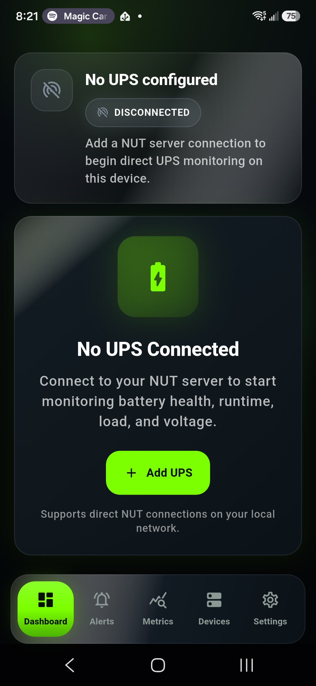
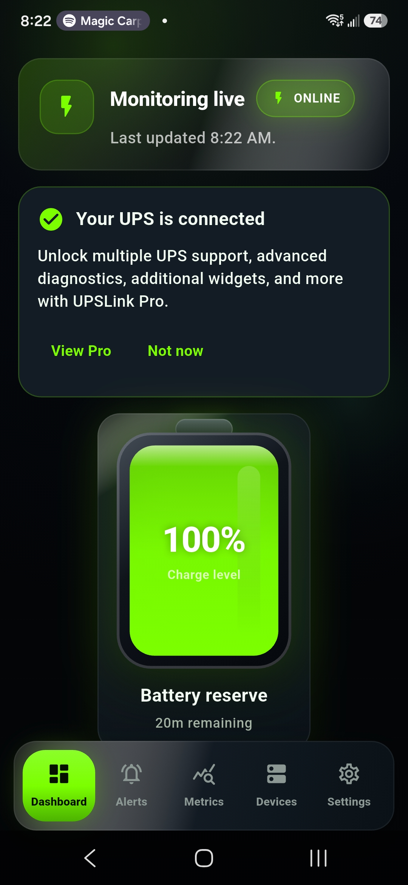

UPSLink is an Android UPS monitoring app that connects to an existing Network UPS Tools (NUT) or upsd-compatible server. It does not configure the physical UPS or create the NUT server. Have the server address, NUT port (usually 3493), and any required read-only credentials ready.
What you need before starting
Your Android phone and NUT server should be reachable on the same trusted network for initial setup. The server might be running on a Synology NAS, Unraid, TrueNAS, Proxmox host, Raspberry Pi NUT server, Linux system, or another platform that exposes a compatible NUT service.
- UPSLink installed on a supported Android device.
- A working NUT or
upsd-compatible server with its UPS visible. - The server IP address or hostname and configured NUT port.
- NUT username and password if the server requires authentication.
- Permission for your phone to reach the server. On Synology, this may require adding the phone's IP address to the permitted-device list.
If you are still preparing the server, read the Network UPS Tools homelab guide and the existing UPSLink getting-started page first.
Open the UPSLink dashboard
Launch UPSLink. A new installation opens to an empty dashboard that shows no configured UPS connections. This is the starting point for adding your first NUT UPS monitor.
UPSLink reads status from your NUT server; it does not directly pair with or reconfigure an APC UPS, CyberPower UPS, Eaton UPS, or other physical unit.

Tap Add UPS
Select Add UPS to open the connection wizard. The wizard collects the server, authentication, UPS selection, and display settings in a controlled sequence.
You can repeat this workflow later for additional NUT servers or UPS devices in a homelab, small business, IT shop, server rack, or NAS environment.

Scan your network or add the server manually
Choose auto-discovery to scan the local network for a NUT server, or switch to manual entry when you already know the hostname or IP address. NUT server auto discovery is convenient on a normal home LAN, while manual entry is useful across segmented networks or a private VPN.
Confirm the port before continuing. Standard upsd installations usually listen on TCP port 3493, but your administrator may have chosen a different port.

Select the discovered NUT server
When discovery finds a server, select the result and choose to use it. Check that the displayed address belongs to the system you expect before moving forward.
If several servers appear, use the IP address and server details to identify the correct Synology, Unraid, TrueNAS, Proxmox, Raspberry Pi, Home Assistant, or Linux NUT host.

Authenticate with NUT credentials
Enter the NUT username and password configured by the server administrator, then continue. A dedicated account with only the permissions needed for monitoring is preferable to reusing an administrative credential.
Some servers allow anonymous status queries. If yours requires credentials, the values must match its NUT user configuration exactly.

Select and name the UPS
Choose the UPS name exposed by the server, then give the connection a clear display name. Names such as “Rack UPS,” “NAS Backup,” or “Office APC Back-UPS” make multiple devices easier to distinguish.
The available battery charge, load, status, and UPS runtime monitoring values depend on what the UPS hardware, firmware, NUT driver, and server expose.

Save the UPS connection
Review the server, port, selected UPS, and friendly name. Save the connection when those details are correct. UPSLink will then use this configuration to request the current status from the NUT server.
Saving an app connection does not change the NUT server or physical UPS configuration.

Enable background alerts
Enable alerting if you want UPSLink to notify you about supported power events while the app is not open. This can provide useful power outage alerts and battery visibility for an attended Android device.
Alerts complement your infrastructure plan; they do not replace NUT-based graceful shutdown automation on protected systems.

Allow Android notification permissions
When Android asks whether UPSLink may send notifications, choose Allow if you enabled alerts. Without this operating-system permission, Android can prevent the app from presenting notifications.
You can review notification access later in Android Settings if you dismiss or change this choice.

Confirm the UPS is online
Return to the dashboard and confirm that the new card reports an online connection and current data. Open the UPS for more detail and verify that the values are plausible for the present load and power state.
Your Android phone is now acting as a Network UPS Tools Android client. It is monitoring the server data; it is not directly controlling the UPS.

Troubleshooting common connection problems
The server is not discovered
Confirm the phone is on the same trusted LAN, turn off guest-network isolation, and verify that upsd is listening on a network interface the phone can reach. Auto-discovery may not cross VLANs, routers, or VPN boundaries; use manual entry when routing and access controls already permit the connection.
The NUT port is incorrect or unreachable
Check the server configuration and firewall. Port 3493 is the default, not a guarantee. Do not expose the NUT port directly to the public internet. For remote monitoring, use a secure VPN that you configure and control.
The credentials are rejected
Verify capitalization and the NUT username/password on the server. Confirm that its access-control rules allow queries from your phone's address. A login for the NAS or Linux operating system is not necessarily the same as a NUT account.
A Synology NUT server will not connect
In Synology DSM, enable Network UPS Server and add the Android device's current LAN IP address to the permitted-device list where required. DHCP address changes can invalidate that permission, so a stable reservation may help.
Battery or runtime data is missing
UPSLink can display only the variables supplied by the NUT server. Exact metrics vary by model and driver across APC, CyberPower, Eaton, Tripp Lite, Vertiv/Liebert, and PowerWalker UPS hardware. Check the raw NUT output and hardware compatibility before treating a missing field as an app fault.
Compatible environments and common uses
This workflow can support Synology UPS monitoring, Unraid UPS monitoring, TrueNAS UPS monitoring, Proxmox UPS monitoring, Home Assistant UPS monitoring, and Linux UPS monitoring whenever a reachable NUT or upsd-compatible service is correctly configured.
Common uses include homelab UPS monitoring, NAS UPS monitoring, small business UPS monitoring, IT shop power monitoring, and server rack UPS monitoring. The protected load might include a network switch, storage system, workstation, or Dell PowerEdge server, while the UPS itself may come from a compatible power-hardware vendor.
UPSLink gives a person convenient Android visibility and supported alerts. Configure and test graceful shutdown behavior separately on the systems being protected. A notification is useful context, but it is not a substitute for an automatic shutdown policy during a long outage.
Your first UPSLink connection is complete
You have identified a NUT server, selected its UPS, saved the connection, enabled alerts, and confirmed live status on Android. Use the dashboard regularly to watch battery condition, load, status, and runtime values that your server makes available.
For connection questions, visit the UPSLink FAQ. For a deeper explanation of NUT architecture and safe shutdown planning, continue with the complete Network UPS Tools guide.
Keep your UPS status within reach.
Explore UPSLink features, screenshots, and download options from the main product page.